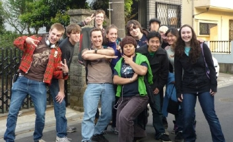
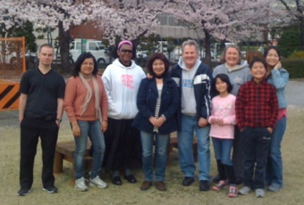

関東エリア KANTO AREA
東京ベース(Tokyo Base)
東京ベース(Tokyo Base)

日本全国，北海道から沖縄まで短期の伝道のために、様々な働きの機会をもっています。路傍伝道，地方教会での奉仕，大学伝道，英会話，その他色々な働きがあります。
Email. john@somers-harris.com
Website(English only). http://www.ywamtokyo.org/
NET(North East Tokyo)
NET(North East Tokyo)

YWAM NET kind of fulfills its name because we have such a diversity of staff, ministries and areas. We are serving local churches, we do street evangelism, English conversation, and other kinds of outreach and ministry.
Address:
YWAM NET
1-28-21 Kosuge, Katsushika-Ku
Tokyo,Japan 124-0001
Tel. 81-3-3690-4815
Email: ywamnet@gmail.com
Website. www.ywamnet.com
成田国際キリスト教会(Narita International Christ Church)
成田国際キリスト教会(Narita International Christ Church)
「成田国際キリスト教会」は1994年YWAMの教会開拓チームによって設立されました。設立当初よりインターナショナル教会として様々な国々の人々が集っています。礼拝は日本語と英語のバイリンガルで行っています。2003年には教会員と教会の場所に関して多くの変化があり、2003年の８月に教会が成田市から富里市に移りました。現在(３人の教会スタッフを含め)１２人の教会員がおり、教会員の大半は日本人です。教会は新しい所在地に移り、教会員共に2004年のための神様のご計画の中にある次のステップを祈り求めています。
日曜日の礼拝は午前10:00から12:00まで 子供のための日曜学校は午後12:15から午後1:00まです。
〒286-0221 千葉県冨里市七栄 649-269
Email：loishager@hotmail.com
Tel：0476-91-1884
Fax：0476-91-1884